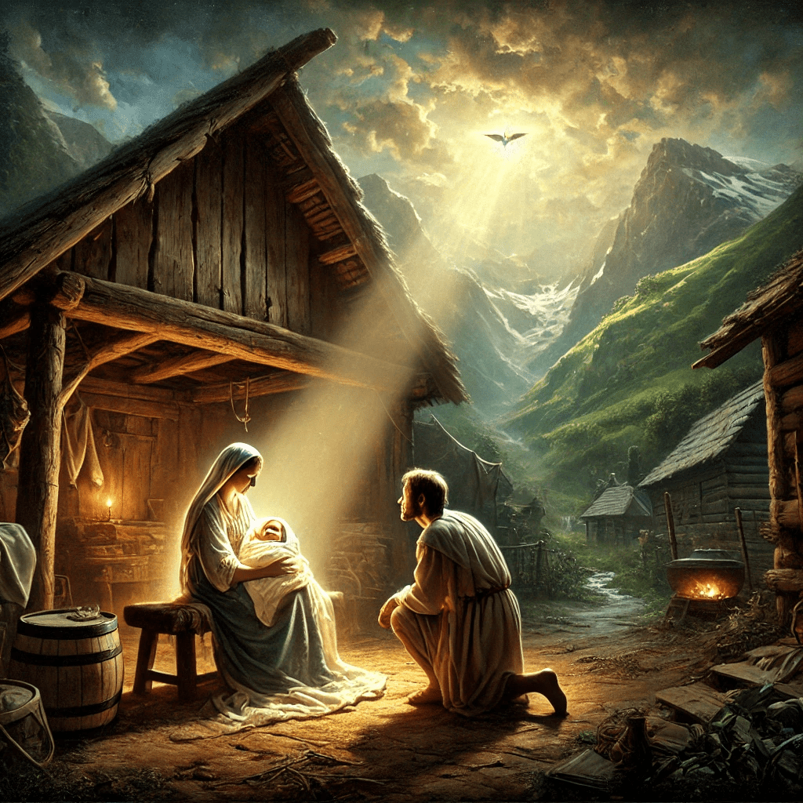

Bienvenido a nuestra página web. Aquí puedes encontrar información sobre nuestros proyectos y más.
Prólogo: El Surgimiento del Héroe
1.1 El Origen de la Luz y la Oscuridad
1. En los días antiguos, cuando la tierra aún no conocía la sombra del mal, los hombres vivían en paz, y la creación del Creador florecía bajo la luz del sol. 2. Mas en el silencio de los abismos, una fuerza oscura despertó, y su nombre era Malakar, el Oscuro. 3. Nacido del odio y de la desesperanza, Malakar se levantó desde las profundidades, trayendo consigo el terror y la destrucción. 4. Y su sombra se extendió por los reinos de los hombres, corrompiendo todo lo que tocaba. 5. Los cielos se oscurecieron, y la luz se desvaneció, pues Malakar era como una llama de oscuridad, que consume toda esperanza.
6. Y los hombres clamaron al Creador, pidiendo auxilio, pues no podían soportar la maldad de Malakar. 7. Y el Creador, en su infinita misericordia, escuchó sus súplicas y preparó un camino para la redención. 8. Y en los corazones de los sabios, plantó una visión, un sueño profético que anunciaba la venida de un salvador. 9. Y así estaba escrito: "En tiempos de gran oscuridad, cuando el mundo se encuentre sumido en la desesperación, se levantará un Redentor. 10. Él será luz en medio de las tinieblas, y con su fuerza y su pureza, desterrará la sombra y restaurará la paz en la tierra."
Capítulo 1: Los Primeros Años de Lucian
1.1 Nacimiento y Origen
1. En los días cuando la luz aún brillaba pura y sin mancha sobre la tierra, y el mal de Malakar aún no había oscurecido los corazones de los hombres, sucedió que en una aldea humilde, a los pies de las montañas verdes, nació un niño al que llamaron Lucian. 2. Y su nacimiento fue como un susurro del Creador, sin trompetas ni grandiosidad, en la quietud de una noche iluminada por una estrella solitaria, que resplandecía con una luz suave y bendita sobre el lugar de su nacimiento.
3. Y los padres de Lucian, Erath y Elara, eran justos ante los ojos del Creador, caminando en todos los caminos de la rectitud y la humildad. 4. Y dijeron: "Este niño es un don del Altísimo, y en él pondremos toda nuestra esperanza, para que crezca en bondad y sabiduría, y sea como una luz en estos tiempos de incertidumbre."
5. Y creció Lucian entre los campos verdes y los ríos cristalinos de la aldea de Verdant, amado por todos y conocido por su bondad y compasión. 6. Pues desde su infancia, su corazón fue inclinado hacia la justicia y la misericordia, y su mano siempre se extendía hacia los necesitados, compartiendo su pan con los hambrientos y consolando a los que sufrían.
7. Y cuando los ancianos de la aldea lo veían, decían entre ellos: "Bendito sea este niño, pues en él vemos la promesa de un nuevo amanecer, una luz que no se apagará mientras haya justicia en la tierra." 8. Y todos los que lo conocían veían en Lucian un reflejo de la pureza y la virtud que alguna vez reinó en el corazón de los hombres.
1.2 La Marca del Héroe
9. Y aconteció en aquellos días, cuando Lucian era aún un niño, que una manada de lobos descendió de las colinas sobre los rebaños de la aldea. 10. Y los pastores, al ver la ferocidad de los lobos, huyeron aterrorizados, dejando atrás a las ovejas y a los corderos para que fueran presa de las bestias.
11. Mas Lucian, viendo el peligro que acechaba, no huyó como los demás, sino que, armado solo con un cayado y una piedra, se enfrentó a los lobos con un valor que no era común en los hombres de su edad. 12. Y dijo en voz alta: "¡Oh, lobos de la oscuridad, no temeréis a un niño, mas temed a la luz del Creador que mora en él! Pues protegeré a estos inocentes con toda la fuerza que Él me ha dado."
13. Y con un corazón lleno de fe y coraje, Lucian se lanzó contra los lobos, y al ver la luz que emanaba de sus ojos, las bestias, llenas de temor, huyeron de su presencia, pues sentían que el Creador estaba con él. 14. Y ningún lobo se atrevió a volver a los prados de Verdant mientras Lucian estuvo allí.
15. Y cuando los aldeanos supieron de esta hazaña, vinieron a él maravillados y dijeron: "Verdaderamente, este niño es elegido por el Creador, pues con su fe y valentía ha puesto en fuga a los lobos y ha salvado a nuestros rebaños." 16. Y desde aquel día, Lucian fue conocido no solo por su bondad, sino también por su fuerza y su valor.
17. Y creció Lucian en sabiduría y estatura, y en gracia para con el Creador y con los hombres. 18. Y todos los que lo veían decían: "Este joven será grande entre nosotros, pues la luz del Creador brilla intensamente en él, y su camino está destinado a ser una guía para todos los hombres."
19. Así pasaron los años, y Lucian continuó caminando en los caminos de la rectitud y la justicia, siempre guiado por la luz interior que el Creador había plantado en su corazón desde su nacimiento. 20. Y aunque aún no conocía su destino, el Creador lo estaba preparando para la gran obra que había de realizar, para la redención de todos los hombres.
21. Y así concluye el primer capítulo de los días de Lucian, el hijo de Verdant, en quien la esperanza del Creador fue depositada para ser luz en medio de las tinieblas. 22. Y el pueblo aguardaba, sabiendo que el día vendría en que la verdadera misión de Lucian sería revelada, y la oscuridad que se avecinaba sería enfrentada por la luz que nunca se extingue.